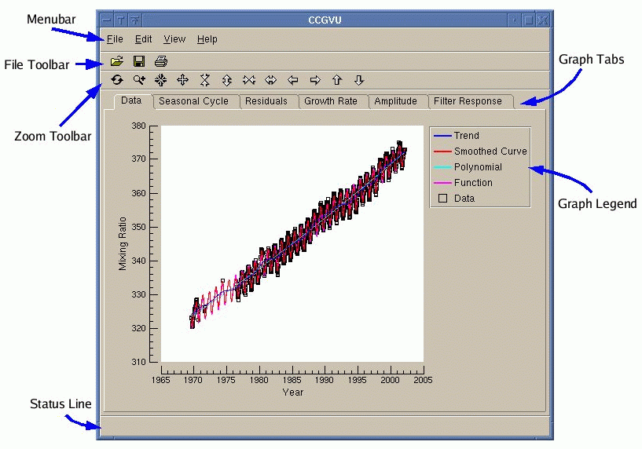

ccgvu Workspace
The ccgvu user interface is divided up into several areas. These are:
- The Menu Bar
- The Menu Bar provides access to all of ccgvu's functions and options.
- Tool Bars
- The Tool Bars provide shortcuts to commonly used functions, with similar
functions grouped together.
- The Graph Area
-
The main graph area is divided into several different tabs, each displaying
a separate graph with different parts from the results of the curve fit.

CCGVU Graphs
The different graph tabs in the main window are:
-
Data
-
The Data graph displays the following data curves:
-
Original Data - The original data set
-
Function - The function fit to the data.
-
Polynomial - The polynomial part of the function.
-
Smoothed Curve - The best fit curve, that is, the function plus
short term filtering of the residuals.
-
Trend Curve - The deseasonalized data, that is, the polynomial
part of the function plus long term filtering of the
residuals.
-
Seasonal Cycle
-
The Seasonal Cycle graph displays the following data curves:
-
Detrended Data - The original data minus the long term trend line.
-
Smoothed Seasonal Cycle -
The short term filter results plus the harmonics
part of the function.
-
Seasonal Cycle Harmonics -
The harmonics part of the function. This is
the average seasonal cycle.
-
Residuals
-
The Residuals graph displays the following data curves:
-
Residuals from Function -
The difference between the original data and
the function fit.
-
Smoothed residuals -
The short term filter results of the function
residuals.
-
Trend of residuals -
The long term filter results of the function
residuals.
-
Residuals from Smoothed Curve -
The difference between the original data and
the final, best fit smoothed curve.
-
Growth Rate
-
The Growth Rate graph displays the derivative of the long term
trend.
-
Amplitude
-
The Amplitude graph displays the peak to peak amplitudes
for each yearly cycle. The amplitude is calculated by computing
first the difference between the maximum value of the smooth best fit
curve minus the value of the trend. Then the difference between the
minimum value of the smooth curve and the trend is calculated. The
sum of these two differences is the peak to peak amplitude.
-
Filter Response
-
This graph plots the response of the filter function using the
short term cutoff value and the long term cutoff value. It displays
the following data curves:
-
Short Term Filter - The response function using the short
term cutoff value.
-
Long Term Filter - The response function using the long
term cutoff value.